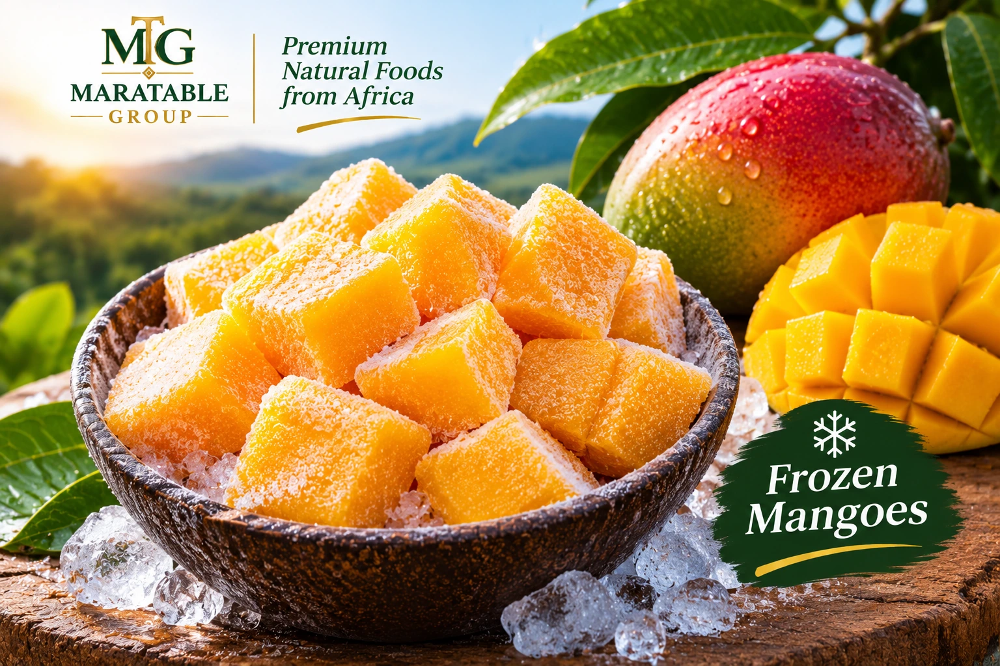
Frozen Mangoes
Golden mango pieces prepared for smoothies, desserts, foodservice and convenient retail use.
Frozen FruitA considered portfolio of frozen foods, natural products and coffee for retail, foodservice and international distribution.

Golden mango pieces prepared for smoothies, desserts, foodservice and convenient retail use.
Frozen Fruit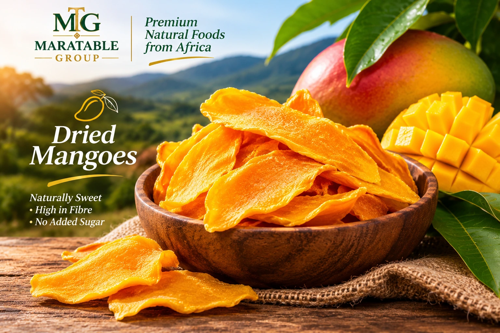
Naturally sweet mango slices for snacking, retail packs and ingredient applications.
Dried Fruit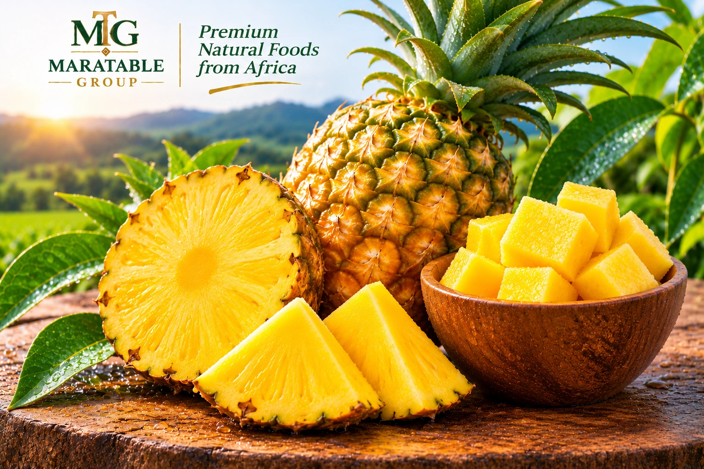
Bright, tropical pineapple for retail, foodservice, beverages and ingredient use.
Fruit Range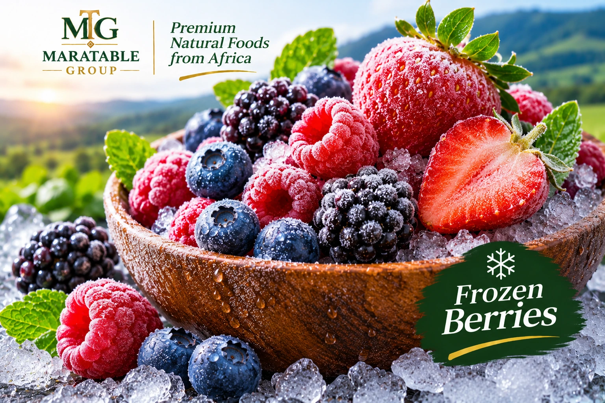
A colourful berry selection suited to smoothies, bakery, desserts and foodservice.
Frozen Fruit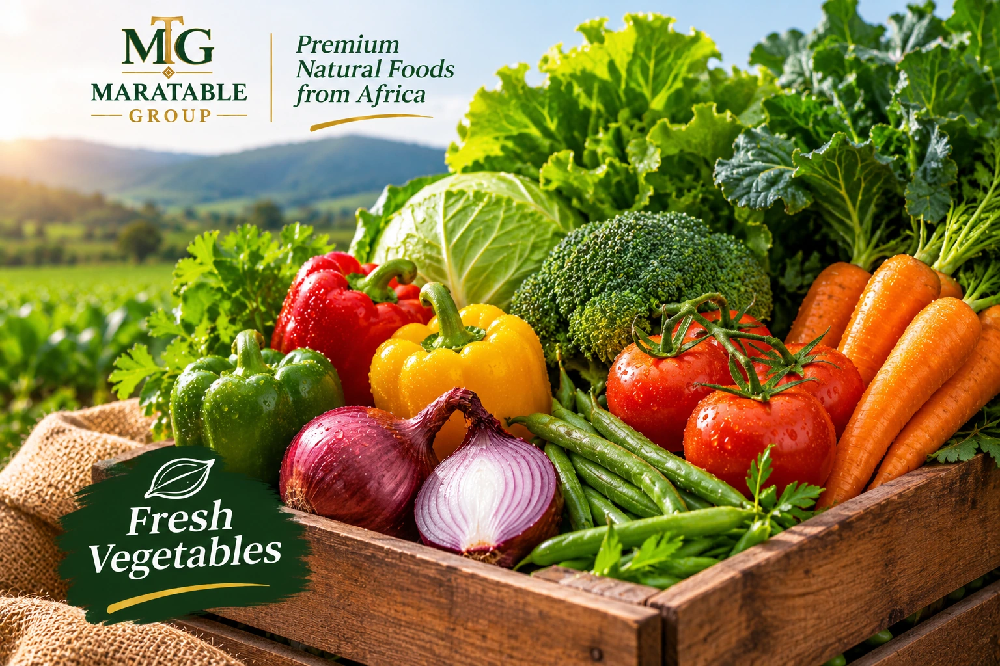
A selection of fresh vegetables for retail, kitchens and wholesale supply.
Fresh Produce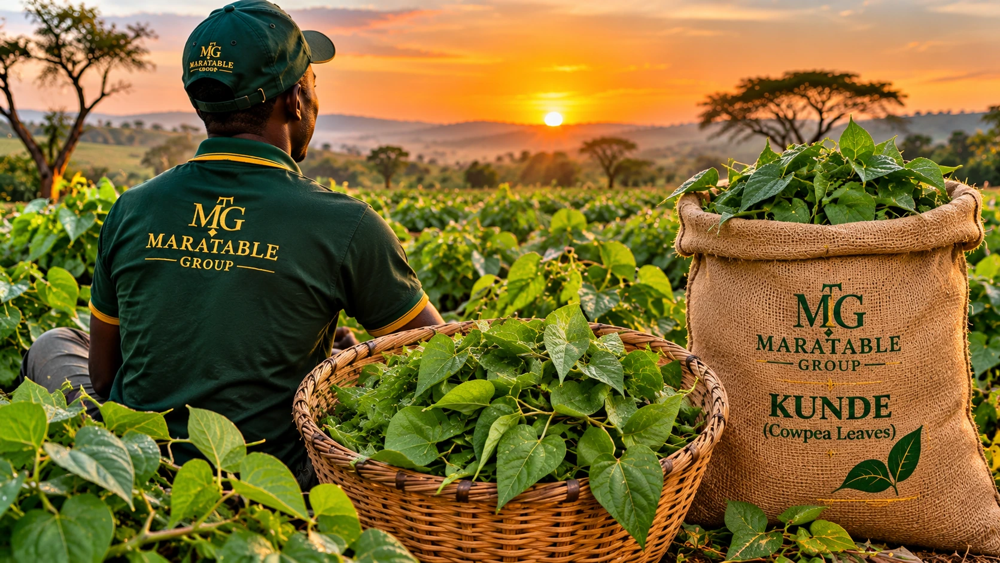
Fresh kunde leaves for wholesome meals, retail and produce supply.
Fresh Vegetables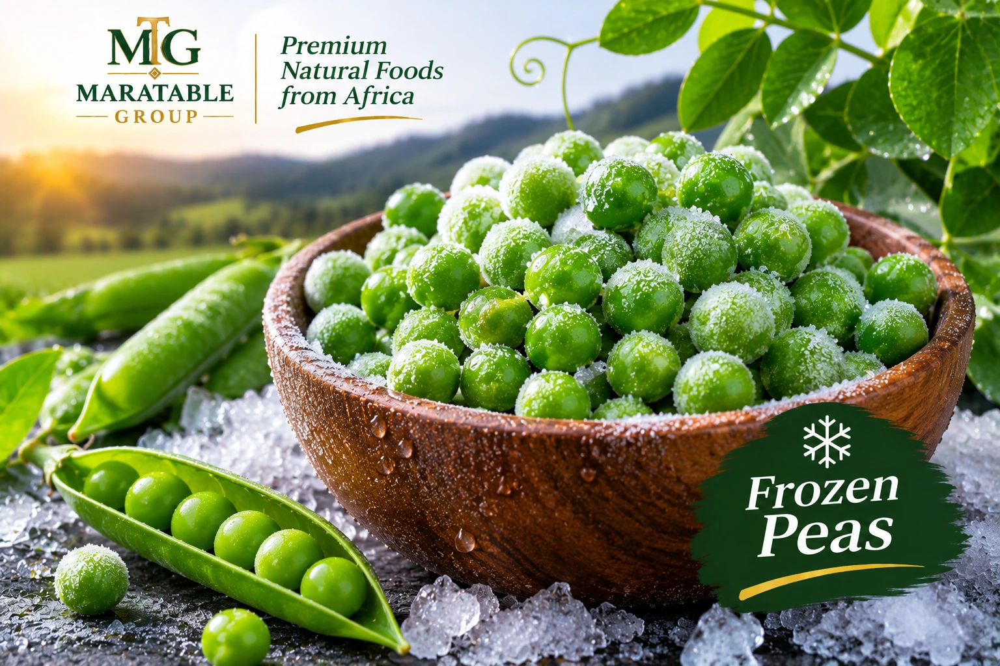
Bright green peas for convenient preparation across retail and foodservice kitchens.
Frozen Vegetables
Premium honey and selected natural products built around quality.
Natural Foods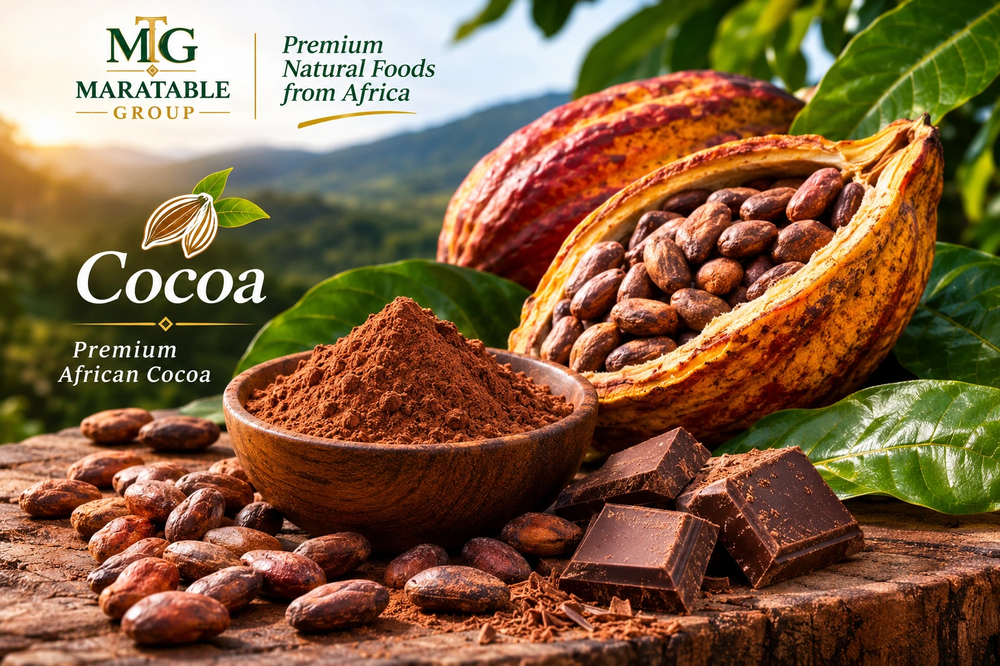
African cocoa for ingredient buyers, manufacturers and food businesses.
Natural Ingredients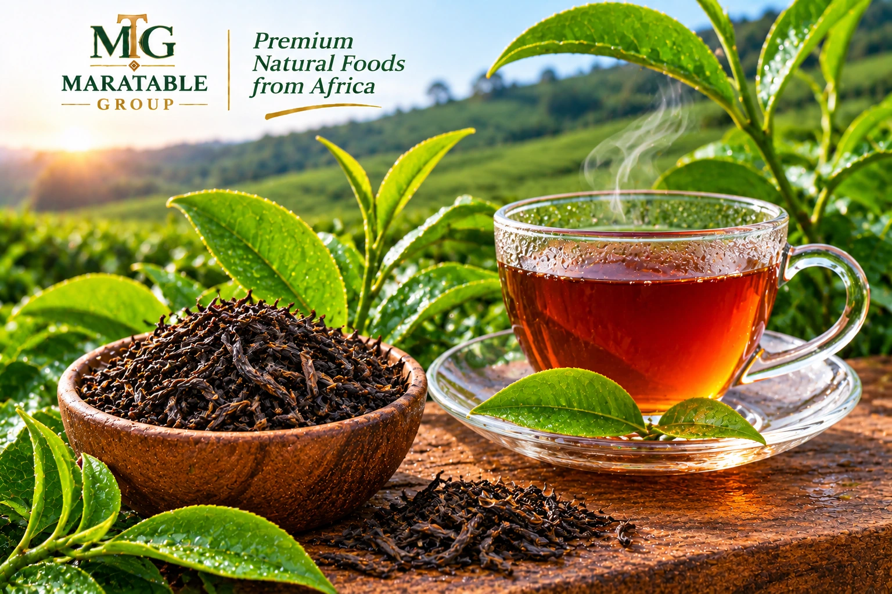
Selected tea for retail, hospitality and wholesale supply conversations.
Beverages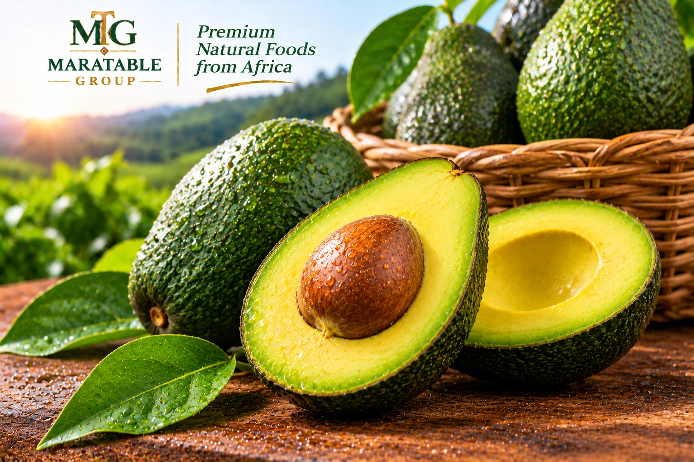
Fresh avocados for retail, foodservice and ingredient supply.
Fresh Produce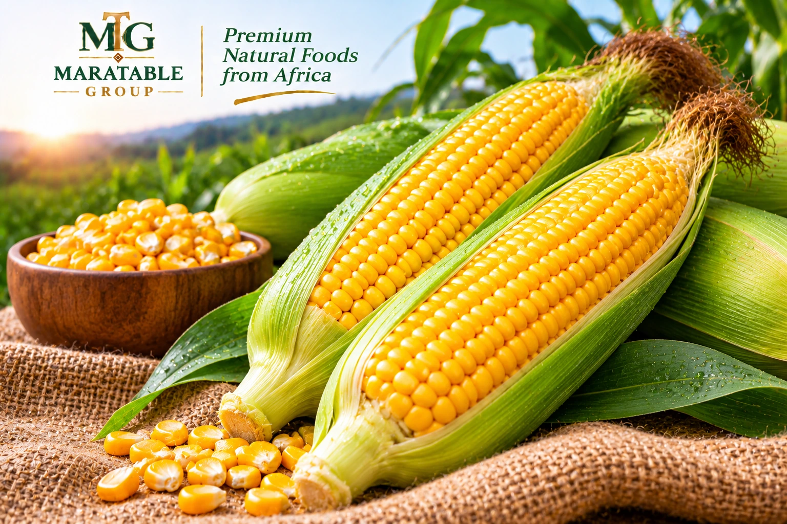
Quality maize for food supply, wholesale and ingredient applications.
Agricultural Produce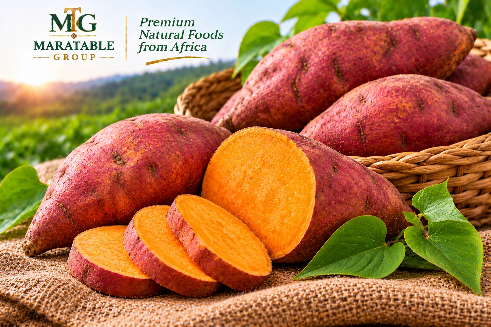
Wholesome sweet potatoes for retail, foodservice and food processing.
Agricultural Produce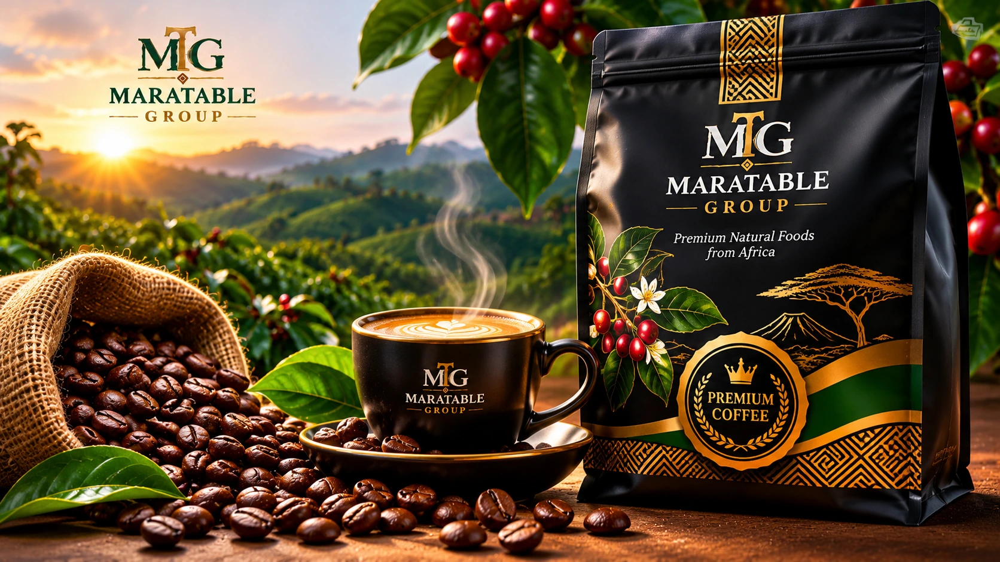
Premium roasted coffee presented in a distinctive black and gold pack, for buyers seeking ready-to-brew coffee.
Roasted Coffee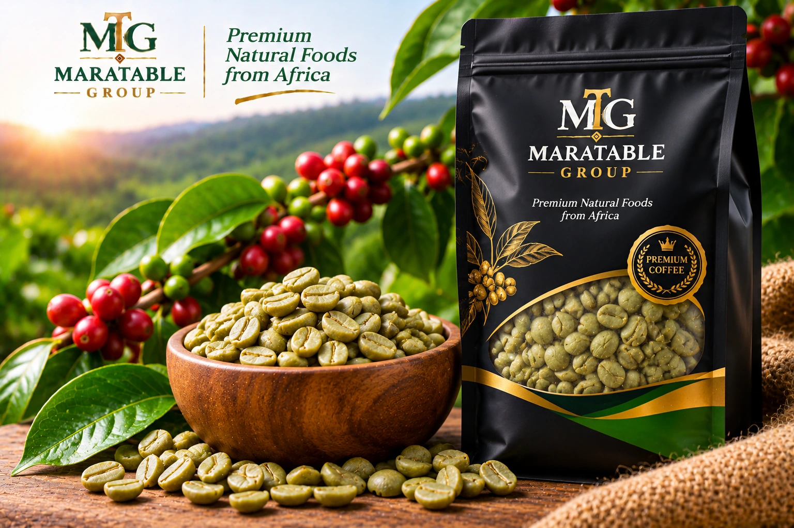
Unroasted green coffee beans for roasters, manufacturers and buyers who manage their own roast profile.
Unroasted CoffeeFoodservice is a customer channel for hotels, institutions, distributors and professional kitchens. Contact MaraTable Group to discuss supply requirements.
Frozen products make seasonality easier to manage while keeping kitchens moving.
Request Product Info →